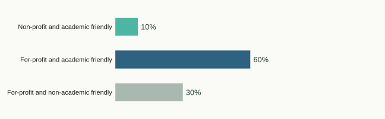

Will Glenny, JB Lanuza, Demetra Rakosy, Emma Ladouceur, Yuping Zhong, Tiffany M Knight. Flowers for habitat enhancement primarily benefit common insect pollinators across temperate grasslands. Journal of Applied Ecology, 63(1), e70216. DOI
Publications
2026
Maria Paniw, Duarte S Viana, Cristina Coccia, Virginia Domínguez-García, Iñigo Donázar-Aramendía, Sebastiano de Franciscis, Alberto García-Rodríguez, Simone Guareschi, Pablo Homet, JB Lanuza, others. Multiple global-change drivers and cascading effects in Mediterranean ecosystems: Lessons from an iconic national park. Conservation Science and Practice, 8(6), e70293. DOI
Lorenzo Marini, JB Lanuza. Honeybee dominance alters foraging of wild pollinators across Europe. Communications Biology. DOI
2025
JB Lanuza, Tiffany M Knight, Nerea Montes-Perez, Will Glenny, Paola Acuña, Matthias Albrecht, Maddi Artamendi, Isabelle Badenhausser, Joanne M Bennett, Paolo Biella, others. EuPPollNet: a European database of plant-pollinator networks. Global Ecology and Biogeography, 34(2), e70000. DOI
2023
David García-Callejas, Oscar Godoy, Lisa Buche, María Hurtado, JB Lanuza, Alfonso Allen-Perkins, Ignasi Bartomeus. Non-random interactions within and across guilds shape the potential to coexist in multi-trophic ecological communities. Ecology Letters, 26(6), 831–842. DOI
JB Lanuza, Alfonso Allen-Perkins, Ignasi Bartomeus. The non-random assembly of network motifs in plant–pollinator networks. Journal of Animal Ecology, 92(3), 760–773. DOI
Manu E Saunders, Liam K Kendall, JB Lanuza, Mark A Hall, Romina Rader, Jamie R Stavert. Climate mediates roles of pollinator species in plant–pollinator networks. Global Ecology and Biogeography, 32(4), 511–518. DOI
JB Lanuza, Romina Rader, Jamie Stavert, Liam K Kendall, Manu E Saunders, Ignasi Bartomeus. Covariation among reproductive traits in flowering plants shapes their interactions with pollinators. Functional Ecology, 37(7), 2072–2084. DOI
JB Lanuza, Miguel Á Collado, Ferran Sayol, Daniel Sol, Ignasi Bartomeus. Brain size predicts bees' tolerance to urban environments. Biology Letters, 19(11), 20230296. DOI
2022
Ignasi Bartomeus, JB Lanuza, Thomas J Wood, Luisa Carvalheiro, Francisco P Molina, Miguel Ángel Collado, Luis Oscar Aguado-Martín, David Alomar, Marián Álvarez-Fidalgo, Piluca Álvarez Fidalgo, others. Base de datos de abejas ibéricas. Ecosistemas, 31(3), 2380–2380. DOI
2021
JB Lanuza, Ignasi Bartomeus, Tia-Lynn Ashman, Greg Bible, Romina Rader. Recipient and donor characteristics govern the hierarchical structure of heterospecific pollen competition networks. Journal of Ecology, 109(6), 2329–2341. DOI
2017
JB Lanuza, Ignasi Bartomeus, Oscar Godoy. Opposing effects of floral visitors and soil conditions on the determinants of competitive outcomes maintain species diversity in heterogeneous landscapes. Ecology Letters, 170423. DOI
Publication fairness
I assess the citation fairness of my publication record using the fairpub R package, based on references indexed by OpenAlex, as part of my commitment to transparent and responsible research evaluation.
